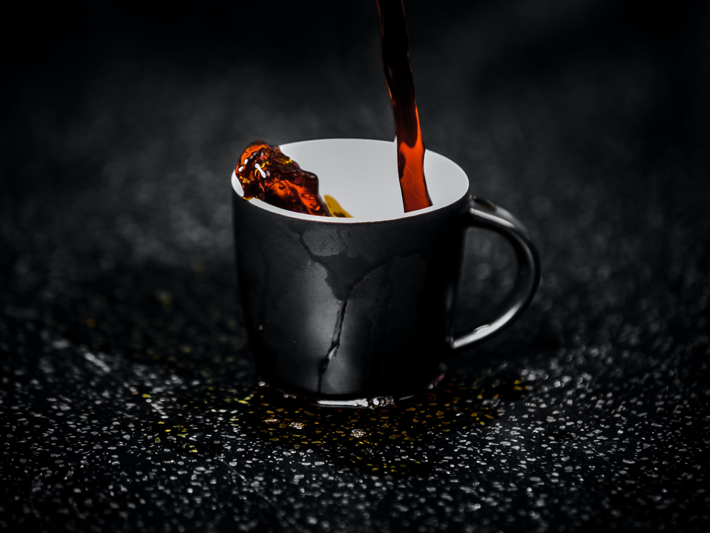

Home
Hobbies
Achievements
Gunnar enjoys spending time outside with his partner, Derek. They travel whenever time allows.
Jazz is Gunnar’s 7-year-old Corgi with a stare that pierces souls.

Coffee has always been a hobby as well as a great job while Gunnar pursues his education.